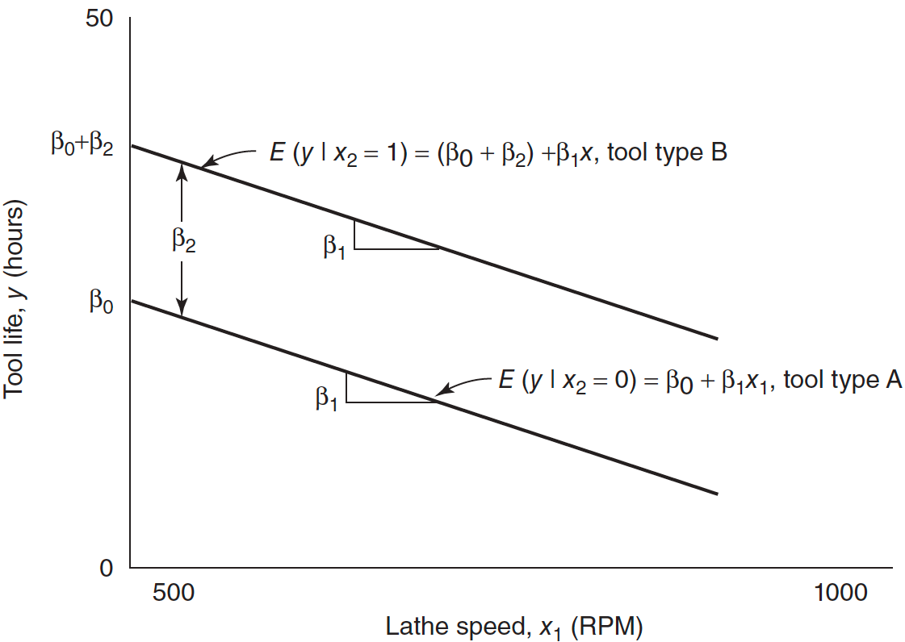

Categorical Variables üõ†
MATH 4780 / MSSC 5780 Regression Analysis
Dr. Cheng-Han Yu
Department of Mathematical and Statistical Sciences
Marquette University
Department of Mathematical and Statistical Sciences
Marquette University
Categorical Variables
- Examine the relationship between numerical response and categorical predictors.
- Gender (Female üë©, Male üë®, Other üè≥Ô∏è‚Äçüåà) : Gender income/wage gap
- Country (USA üá∫üá∏, Canada üá®üá¶, UK üá¨üáß, Germany üá©üá™, Japan üáØüáµ, Korea üá∞üá∑) : Meat consumption level
- Political Party (Republican üî¥, Democratic üîµ, Other ‚ö´) : Donation to healthcare
Categorical Variable in Regression
With categorical variable Gender
- Inappropriate height-weight relationship if gender factor is ignored.
- The two groups have different \(\beta_0\) and \(\beta_1\).
Example 8.1 Tool Life Data (LRA)
Relate the effective life (hours) of a cutting tool \((y)\) used on a lathe to
the lathe speed in revolutions per minute \((x_1)\) (Numerical)
the type of cutting tool used \((x_2)\) (Categorical)
Indicator Variable
- Tool type can be represented as: \[x_2 = \begin{cases} 0 & \quad \text{Tool type A}\\ 1 & \quad \text{Tool type B} \end{cases}\] where \(x_2\) is a dummy variable.
- If a first-order model is appropriate: \[y = \beta_0+\beta_1x_1+\beta_2x_2 + \epsilon, \quad \epsilon \sim N(0, \sigma^2)\]
- Assume that the variance is the same for both levels (type A and B).
Interpretation of Coefficients
- For Tool type A \((x_2 = 0)\) the model becomes: \[\begin{align} y &= \beta_0+\beta_1x_1+\beta_2(0) + \epsilon \\ &= \beta_0+\beta_1x_1+ \epsilon \end{align}\]
- For Tool type B \((x_2 = 1)\) the model becomes: \[\begin{align} y &= \beta_0+\beta_1x_1+\beta_2(1) + \epsilon \\ &= (\beta_0 + \beta_2)+\beta_1x_1+ \epsilon \end{align}\]
- Changing from type A to B induces a change in the intercept, but the slope is unchanged and identical.
- Type A is the baseline level.
Parallel Regression Lines
- Two parallel regression lines with a common slope \(\beta_1\) and different intercepts.
- \(\beta_2\) measures the difference in mean tool life resulting from changing from tool type A to B.
\(y = \beta_0+\beta_1x_1+\beta_2x_2 + \epsilon\)

\(\hat{y} = b_0 + b_1 x_1 + b_2 x_2\)
R Lab Model Fitting
- The categorical variable should be of type
characterorfactor.
'data.frame': 20 obs. of 3 variables:
$ hours: num 18.7 14.5 17.4 14.5 13.4 ...
$ speed: num 610 950 720 840 980 530 680 540 890 730 ...
$ type : chr "A" "A" "A" "A" ... Estimate Std. Error t value Pr(>|t|)
(Intercept) 36.986 3.5104 10.5 7.2e-09
speed -0.027 0.0045 -5.9 1.8e-05
typeB 15.004 1.3597 11.0 3.6e-09- \(\hat{y} = 37 -0.027x_1 +15x_2\)
- All else held constant, type B tools are expected, on average, to have 15 hours longer life than the baseline.
Model Checking
Same variance of the errors for both A and B?
Approximately normal
Single Model vs. Separate Models
- Two separate models, one for each type, could have been fit to the data. \[y^A = \beta_0^A+\beta_1x_1^A+ \epsilon^A, \quad \epsilon^A \sim N(0, \sigma^2)\] \[y^B = \beta_0^B+\beta_1x_1^B+ \epsilon^B, \quad \epsilon^B \sim N(0, \sigma^2)\]
If performing well, the single-model approach with dummy variables is preferred.
- Only one equation to work with, \(y = \beta_0+\beta_1x_1+\beta_2x_2 + \epsilon\), a simpler practical result.
- Both lines are assumed to have the same slope \(\beta_1\) and error variance \(\sigma^2\).
- Combine the data to produce a single estimate of the common parameters.
- Use more data to estimate the parameters, and the estimation quality would be better.
Difference in Slope
- If we expect the slopes to differ, include an interaction term between the variables: \[y = \beta_0+\beta_1x_1+\beta_2x_2 + \color{blue}{\beta_3x_1x_2} + \epsilon\]
- Tool type A \((x_2 = 0)\): \[\begin{align} y &= \beta_0+\beta_1x_1+\beta_2(0) + \beta_3x_1(0) + \epsilon \\ &= \beta_0+\beta_1x_1+ \epsilon \end{align}\]
- Tool type B \((x_2 = 1)\): \[\begin{align} y &= \beta_0+\beta_1x_1+\beta_2(1) + \beta_3x_1(1) + \epsilon \\ &= (\beta_0+ \beta_2) + (\beta_1+\beta_3)x_1+ \epsilon \end{align}\]
- \(\beta_2\) is the change in the intercept caused by changing from type A to type B.
- \(\beta_3\) is the change in the slope caused by changing from type A to type B.
Response Function for the Tool Life Example
- \(y = \beta_0+\beta_1x_1+\beta_2x_2 + \beta_3x_1x_2 + \epsilon\) defines two regression lines with different slopes and intercepts.
\(y = \beta_0+\beta_1x_1+\beta_2x_2 + \beta_3x_1x_2+\epsilon\)
\(\hat{y} = b_0 + b_1 x_1 + b_2x_2 + b_3 x_1 x_2\)

Two Models
- The model \(y = \beta_0+\beta_1x_1+\beta_2x_2 + \beta_3x_1x_2 + \epsilon\) is equivalent to fitting two separate regressions:
- \(y = \beta_0+\beta_1x_1+ \epsilon\)
- \(y = \alpha_0 + \alpha_1x_1+ \epsilon\), \(\quad \alpha_0 = \beta_0 + \beta_2\), \(\quad \alpha_1 = \beta_1 + \beta_3\).
How do we test if the 2 regressions are identical?
- Can use the extra sum of squares method by comparing the full and reduced models.
- \(H_0: \beta_2 = \beta_3 = 0 \quad H_1: \beta_2 \ne 0 \text{ and(or) } \beta_3 \ne 0\)
R Lab Regression Model with Interaction
Call:
lm(formula = hours ~ speed + type + speed:type, data = tool_data)
Coefficients:
(Intercept) speed typeB speed:typeB
32.7748 -0.0210 23.9706 -0.0119 R Lab Regression Lines
\(y = \beta_0+\beta_1x_1+\beta_2x_2 + \epsilon\)

\(y = \beta_0+\beta_1x_1+\beta_2x_2 + \beta_3x_1x_2+\epsilon\)
R Lab Test Effect of Tool Type
- \(H_0: \beta_2 = \beta_3 = 0 \quad H_1: \beta_2 \ne 0 \text{ and(or) } \beta_3 \ne 0\)
Analysis of Variance Table
Model 1: hours ~ speed
Model 2: hours ~ speed * type
Res.Df RSS Df Sum of Sq F Pr(>F)
1 18 1282
2 16 141 2 1141 64.8 2.1e-08 ***
---
Signif. codes: 0 '***' 0.001 '**' 0.01 '*' 0.05 '.' 0.1 ' ' 1\(F_{test} = \frac{SS_R(\beta_2, \beta_3 |\beta_1, \beta_0)/2}{MS_{res}} = \frac{1141/2}{141/16} = 64.75 > F_{\alpha, 2, 20-4}\)
The two regression lines are not identical.
More than 2 Categories
- For a categorical predictor with \(m\) levels, we need \(m-1\) dummies.
- Three tool types, A, B, and C. Then two indicators \(x_2\) and \(x_3\) will be needed:
| Tool Type | \(x_2\) | \(x_3\) |
|---|---|---|
| A | 0 | 0 |
| B | 1 | 0 |
| C | 0 | 1 |
- The regression model (common slope) is \[y = \beta_0+\beta_1x_1+\beta_2x_2 + \beta_3x_3 + \epsilon\]
- Type A is the baseline level.
Example 8.3: More Than 2 Levels (LRA)
- An electric utility is investigating the effect of the size of a single family house \((x_1)\) and the type of air conditioning used on the total electricity consumption \((y)\).
| Type of Air Conditioning | \(x_2\) | \(x_3\) | \(x_4\) |
|---|---|---|---|
| No air conditioning | 0 | 0 | 0 |
| Window units | 1 | 0 | 0 |
| Heat pump | 0 | 1 | 0 |
| Central air conditioning | 0 | 0 | 1 |
Which type is the baseline level?
Example 8.3: Dummy Variables
The regression model is \(y = \beta_0+\beta_1x_1+\beta_2x_2 + \beta_3x_3 + \beta_4x_4 + \epsilon\)
“No air conditioning” is the baseline level.
| Type of Air Conditioning | \(x_2\) | \(x_3\) | \(x_4\) |
|---|---|---|---|
| No air conditioning | 0 | 0 | 0 |
| Window units | 1 | 0 | 0 |
| Heat pump | 0 | 1 | 0 |
| Central air conditioning | 0 | 0 | 1 |
If the house has
- no air conditioning,
\[y = \beta_0+\beta_1x_1 + \epsilon\]
- window units,
\[y = (\beta_0 + \beta_2)+\beta_1x_1 + \epsilon\]
- a heat pump,
\[y = (\beta_0 + \beta_3) +\beta_1x_1 + \epsilon\]
- central air conditioning,
\[y = (\beta_0 + \beta_4) +\beta_1x_1 + \epsilon\]
Example 8.3: Interaction
Do you think the model \(y = \beta_0+\beta_1x_1+\beta_2x_2 + \beta_3x_3 + \beta_4x_4 + \epsilon\) is reasonable?
- It seems unrealistic to assume that the slope \(\beta_1\) relating mean electricity consumption to the house size does NOT depend on air-conditioning type.
- The consumption increases with the house size.
- The rate of increase should be different because a more efficient central air conditioning system should have a consumption rate lower than window units.
- Add interaction between the house size and the type of air conditioning: \[y = \beta_0+\beta_1x_1+\beta_2x_2 + \beta_3x_3 + \beta_4x_4 + \beta_5x_1x_2 + \beta_6 x_1x_3 + \beta_7 x_1x_4 + \epsilon\]
Example 8.3: Unique Slope and Intercept
\(y = \beta_0+\beta_1x_1+\beta_2x_2 + \beta_3x_3 + \beta_4x_4 + \beta_5x_1x_2 + \beta_6 x_1x_3 + \beta_7 x_1x_4 + \epsilon\)
“No air conditioning” is the baseline level.
| Type of Air Conditioning | \(x_2\) | \(x_3\) | \(x_4\) |
|---|---|---|---|
| No air conditioning | 0 | 0 | 0 |
| Window units | 1 | 0 | 0 |
| Heat pump | 0 | 1 | 0 |
| Central air conditioning | 0 | 0 | 1 |
No air conditioning: \[y = \beta_0+\beta_1x_1 + \epsilon\]
Window units: \[y = (\beta_0 + \beta_2)+(\beta_1+\beta_5)x_1 + \epsilon\]
Heat pump: \[y = (\beta_0 + \beta_3) +(\beta_1+\beta_6)x_1 + \epsilon\]
Central air conditioning: \[y = (\beta_0 + \beta_4) +(\beta_1+\beta_7)x_1 + \epsilon\]
- \(\beta_5\) is the effect of window units on the slope, comparing to the slope when no air conditioning is used.
More Than One Categorical Variable: Model
- Frequently several categorical variables must be incorporated into the model.
- Suppose in the cutting tool life example a second categorical variable, the type of cutting oil used, must be considered.
- Assuming that the variable has two levels: \[x_3 = \begin{cases} 0 & \quad \text{low-viscosity oil used}\\ 1 & \quad \text{medium-viscosity oil used} \end{cases}\]
- A regression model relating tool life \((y)\) to cutting speed \((x_1)\), tool type \((x_2)\), and type of cutting oil \((x_3)\) is \[y = \beta_0+\beta_1x_1+\beta_2x_2 + \beta_3x_3 + \epsilon\]
❗ The model has the same expression as the model with only one categorical variable having 3 categories. But the meaning is totally different!
More Than One Categorical Variable: Interaction
- Add interactions between cutting speed \(x_1\) and the two categorical variables: \[y = \beta_0+\beta_1x_1+\beta_2x_2 + \beta_3x_3 + \color{blue}{\beta_4x_1x_2} + \color{blue}{\beta_5x_1x_3} + \epsilon\]
| Tool Type | Cutting Oil | Regression Model |
|---|---|---|
| A \(\small (x_2 = 0)\) | Low-viscosity \(\small (x_3 = 0)\) | \(\small y = \beta_0+\beta_1x_1 + \epsilon\) |
| B \(\small (x_2 = 1)\) | Low-viscosity \(\small (x_3 = 0)\) | \(\small y = (\beta_0+ \beta_2) + (\beta_1+\beta_4)x_1 + \epsilon\) |
| A \(\small (x_2 = 0)\) | Medium-viscosity \(\small (x_3 = 1)\) | \(\small y = (\beta_0+ \beta_3) + (\beta_1+\beta_5)x_1 + \epsilon\) |
| B \(\small (x_2 = 1)\) | Medium-viscosity \(\small (x_3 = 1)\) | \(\small y = (\beta_0+ \beta_2 + \beta_3) + (\beta_1+\beta_4 + \beta_5)x_1 + \epsilon\) |
- Each combination results in a separate regression line with different slopes and intercepts.
- Changing from low to medium-viscosity cutting oil changes the intercept by \(\beta_3\) and the slope by \(\beta_5\) regardless of the type of tool used.
- No interaction between the 2 categorical variables.
Interaction between Categorical Variables
- Add a cross-product term involving the two dummy variables \(x_2\) and \(x_3\) to the model: \[y = \beta_0+\beta_1x_1+\beta_2x_2 + \beta_3x_3 + \beta_4x_1x_2 + \beta_5x_1x_3 + \color{blue}{\beta_6x_2x_3} + \epsilon\]
| Tool Type | Cutting Oil | Regression Model |
|---|---|---|
| A \(\small (x_2 = 0)\) | Low-viscosity \(\small (x_3 = 0)\) | \(\small y = \beta_0+\beta_1x_1 + \epsilon\) |
| B \(\small (x_2 = 1)\) | Low-viscosity \(\small (x_3 = 0)\) | \(\small y = (\beta_0+ \beta_2) + (\beta_1+\beta_4)x_1 + \epsilon\) |
| A \(\small (x_2 = 0)\) | Medium-viscosity \(\small (x_3 = 1)\) | \(\small y = (\beta_0+ \beta_3) + (\beta_1+\beta_5)x_1 + \epsilon\) |
| B \(\small (x_2 = 1)\) | Medium-viscosity \(\small (x_3 = 1)\) | \(\small y = (\beta_0+ \beta_2 + \beta_3 + \beta_6) + (\beta_1+\beta_4 + \beta_5)x_1 + \epsilon\) |
- Changing from low to medium-viscosity cutting oil changes the intercept by \(\beta_3\) if tool type A is used.
- The same change in cutting oil changes the intercept by \(\beta_3 + \beta_6\) if tool type B is used.
Comparing Regression Models
- Consider simple linear regression where the \(n\) observations can be formed into \(M\) groups, with the \(m\)-th group having \(n_m\) observations.
- The most general model consists of \(M\) separate equations: \[y = \beta_{0m} + \beta_{1m}x + \epsilon, \quad m = 1, 2, \dots, M\]
- We are interested in comparing this general model to a more restrictive one.
Parallel Lines (Example 8.1 where \(M = 2\))
All \(M\) slopes are identical \(H_0: \beta_{11} = \beta_{12} = \cdots = \beta_{1M} = \beta_1\)
Full Model \((F)\): \(y = \beta_{0m} + \beta_{1m}x + \epsilon, \quad m = 1, 2, \dots, M\).
Reduced Model \((R)\): \(y = \beta_0 + \beta_1x + \color{blue}{\beta_2D_1 + \beta_3D_2 + \cdots + \beta_{M-1}D_{M-1}}+\epsilon\), where \(D_1, \dots, D_{M-1}\) are dummies.
-
\(F_{test} = \frac{(SS_{res}(R) - SS_{res}(F))/(df_{R} - df_{F})}{SS_{res}(F)/df_{F}}\)
- \(df_{R} = n - (M+1)\)
- \(df_{F} = n - 2M\)
- \(SS_{res}(F)\) is the sum of \(SS_{res}\) from each separate regression
Concurrent Lines
- All \(M\) intercepts are equal, \(H_0: \beta_{01} = \beta_{02} = \cdots = \beta_{0M}= \beta_0\)
-
Reduced model: \(y = \beta_0 + \beta_1x + \color{blue}{\beta_2xD_1 + \beta_3xD_2 + \cdots + \beta_{M-1}xD_{M-1}}+\epsilon\).
- \(df_{R} = n - (M+1)\)
- Assume concurrence at the origin.
Coincident Lines
- Both the \(M\) slopes and the \(M\) intercepts are the same,
\(H_0: \beta_{11} = \beta_{12} = \cdots = \beta_{1M} = \beta_1\), \(\beta_{01} = \beta_{02} = \cdots = \beta_{0M} = \beta_0\) -
Reduced model: \(y = \beta_0 + \beta_1x+\epsilon\)
- \(df_{R} = n - 2\)
- Dummy variables are not necessary in the test of coincidence.